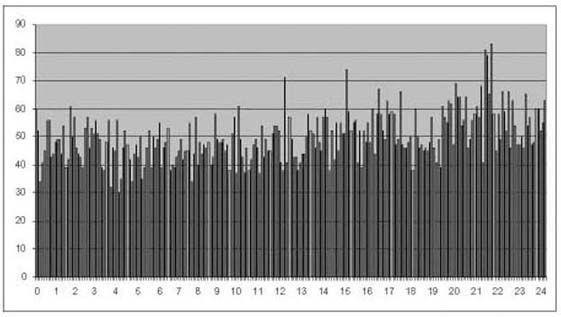
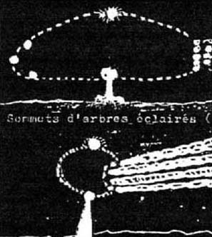
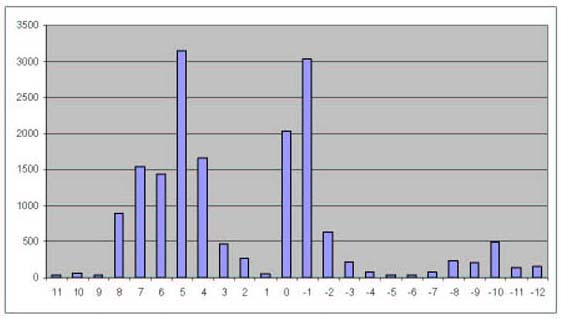
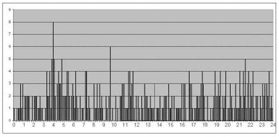

Text & Pictures by Jacques F. Vallee 1550 California Street, no.6L - San Francisco, CA.94109,
janvier 2005 ?
We report here on a study of the hypothesis that UFO events are correlated with local sidereal
time, an observation advanced by Dr. Claude Poher, Dr. Donald Johnson and more recently by
Dr. Peter Sturrock. Local sidereal time is used by astronomers to keep track of the stars that pass the observer's
meridian at a particular instant. A subset of a large catalog for which geographical and temporal data are available
was taken as a basis for the study, involving 11,991 events. Local sidereal time was computed for these events. While
a frequency distribution indicative of a correlation with star positions was indeed detected, control with a separate
catalogue compiled in France discloses an important artefact: multiple entries for a single, particularly remarkable
UFO event have resulted in massively duplicated records. This calls into question the significance of the claimed
pattern.
Selection of cases
In a recent article Dr. Peter Sturrock has presented an interesting series of analyses of a catalog of UFO
sightings (Sturrock 2004), leading to his observation that "the event rate appears to depend upon local sidereal
time.” Sturrock's work stimulated our interest in expanding the analysis to a second catalog, using a
different approach to the calculations while extending it to a critique of the statistical effects present in the
data. Indeed, as Sturrock observes, the complexity of the subject is such that multiple approaches to the same
problem are warranted.
A correlation between the frequency of reported sightings and some astronomical parameter, such as the periodic
approach of certain planets or a particular celestial orientation, would be an important factor in forming
hypotheses about the nature of the UFO phenomenon and its possible extraterrestrial origin. Sidereal time is
especially interesting in this regard since it provides an indication of which stars or other celestial objects are
at the zenith of that location (or along its meridian) at the time of the observation. If UFO sightings tended to
occur at a particular value of the local sidereal time this might mean that a specific celestial source was involved
in the phenomenon. Therefore searches for extraterrestrial signals (such as SETI) might be conducted in the part of
the sky in question.
Figure 1 - LST distribution of CE2 events from UFOCAT (shown here on a 24-hour clock)
The first researcher who noticed a potential correlation of this type was Dr. Claude Poher (Poher 1973). More
recently Dr. Donald Johnson, a co-author of the UFOCAT catalogue (Johnson & Saunders 2002) conducted a
statistical study of the local sidereal time distribution for the occurrence of CE2 events (close encounters with
physical effects). Johnson found the distribution of figure 1, with a peak at 14:00 hours. Johnson also found a
similar peak between 13:00 and 16:00 hours for close encounters of the Third Type (CE3 events) with Chi-square
significance at the level of p less than .0000001.
In these studies the peak comes at times that are different from those found by Poher and Sturrock. In order to
conduct an independent analysis we started from the same basis as in the Sturrock study and extended it to a catalog
of French cases. The Sturrock results are based on a catalog known simply as *U* published by Mr. Larry Hatch (Hatch
2001). The version we used contained 17,757 records and was released on 23 July 2001. The last event recorded in
this catalog was dated 20-Jan-2001.
The Hatch catalog runs on any personal computer equipped with DOS and can be readily understood even by the casual
user. As the analysis proceeds with increasing sophistication the catalog reveals many layers of useful data, under
a consistent coding system. Mr. Hatch has compiled it from the best-available sources in the literature and has
refined the list by comparing these sources among them, resolving issues such as date, time and location. Over the
years he has continued to add new cases and to remove entries that seemed dubious as new information came to light.
Thus, while the Hatch catalog is not homogeneous it is most valuable because it is the result of a systematic
process of filtering and data reduction. Furthermore, it is possible to partially minimizehistorical and cultural
artifacts by narrowing down the scope of the study. If UFO events are correlated with local sidereal time, the
effect should be verifiable (and indeed, enhanced) on a subset where these factors have been minimized.
For the purpose of increasing the homogeneity of the data sample we have narrowed down the Hatch catalog to cases
recorded between 24 June 1947 (generally considered as the start of the "modern era” of UFO sightings) and 31
December 2000. While the accumulation of observations since January 1, 2001 is continuing, the data has not yet been
subjected to the same degree of scrutiny as were the cases of the previous halfcentury. As for pre-Kenneth Arnold
cases, they deserve a separate study. Ongoing research by various groups interested in the history of the field,
including the very large "airship wave” of 1896 and 1897, shows that the phenomenon was recorded in a social
and journalistic environment very different from what we have experienced since the expression "flying saucers”
was launched. Among the 17,070 cases remaining in the list, we found 11,991 entries that contained enough data for a
computation of local sidereal time to be carried out. This sample compares with Sturrock's selection of 12,200 cases
supplied by Mr. Hatch.
Figure 2 - Frequency distribution no.1 as a function of LST in hours (Hatch catalog)

Sidereal time is used by astronomers to keep track of the stars that pass the observer's meridian at a particular
instant. Sidereal time runs faster than Greenwich Mean Time (GMT) by about 3 minutes 56 seconds per day, to complete
an extra 24 hours in one year. At a given site the local sidereal time has the same value every year at the same
date and time. A number of standard algorithms are available on the Internet to conduct this computation, which is
straightforward. We applied this analysis to all 11,991 suitable entries in our catalog, leading to the graph of
figure 2.
Initial results
The results of our LST computation are displayed on figure 2, showing the number of events we recorded in 240
intervals or "bins” of 0.1 hour, between midnight and 24.00 hours. Although this small interval makes for a
noisy plot, it provides the required detail for close comparison with other catalogs, as will be seen below. This
graph matches well with Sturrock's published distribution. In particular it exhibits the same increase in the
frequency of reported events in the range of 20 hours to 23 hours, with a noticeable peak between 21.1 and 21.5
hours of local sidereal time.
Further analysis
Figure 3 - Dessin de témoin

The next step in our analysis was to sort the catalog according to LST value in order to examine the specific
events in the range of our observed maximum. In doing so, one remarkable observation "jumps out” of the
catalog.
On the evening of November 5th, 1990 thousands of witnesses in France reported either one object, or a series of
objects, that appeared to travel relatively slowly along a trajectory that began in the Atlantic shore in the
Southwest and ended in the Alsace region to the Northeast. Witnesses ranged from schoolchildren to pensioners and
from truck drivers to bank presidents. Numerous official reports were filed by Gendarmes. One witness, who has the
rank of Ambassador, made a private report to this author of having observed the phenomenon over several minutes
while driving a car for several blocks towards the Arc-de-Triomphe in Paris: "It looked like the Eiffel tower was
flying horizontally over Paris,” said this witness, who added the object appeared as a single, solid, dark
triangle with lights, flying slowly.
Figure 3 shows a drawing submitted by a witness in one of the 400 reports recorded on that date by researcher
Franck Marie (Marie, 1993). "The time was within 5 minutes of 7:05 P.M.,” wrote this person, "I was driving
towards Artigny with my wife's mother on road RN 387 when (…) we saw three luminous points forming the shape of a V
followed Jacques F.Vallee Are UFO Events related to Sidereal Time ? page 4 by a projector with a vertical beam
lighting up the ground.
It was followed by 5 or 6 luminous points with orange-red trails. All these elements seemed to be part of a single
black mass in slow motion, gliding at low altitude. The big searchlight turned towards the ground lit up the tops of
trees at an estimated 800 meters (2,500 feet) in extraordinary silence…”
Figure 4 - Frequency distribution no.2 after removal of duplicate data (Hatch catalog)
The French Government's UFO study group at the Centre d'Etudes Spatiales in Toulouse (Cnes-Sepra) conducted its own
analysis and concluded that the witnesses had probably observed, and misinterpreted, the reentry of a spacecraft
that indeed was expected to burn up in the atmosphere on that particular evening. Many reports, however, such as the
one quoted above, were so detailed and specific that they have remained unexplained. Among the UFO events in the
Hatch catalog for which a value of LST can be computed there are 56 entries for this single case of November 5,
1990. Such a large block of entries, occurring in such a small interval of LST values, introduces a potential
distortion in the statistical correlation.
While it is appropriate for the Hatch catalog to list individual reports separately (since they occurred over a
wide area), in our own analysis there should be only one entry, given the fact that a single phenomenon, admittedly
quite spectacular, occurred on that particular evening. When this duplication is removed the frequency distribution
becomes that of figure 4, where the rise in frequency around 21.5 hours is less noticeable, although still
present.
Table 1 - Comparing frequency distributions
Nombre de cas
Bins containing
25
30
35
40
45
50
55
60
65
70
75
80
85
Distribution 1
0
7
22
42
66
36
37
13
6
2
1
2
0
Distribution 2
0
7
22
42
66
37
37
14
7
2
0
0
0
In order to compare the distribution of figure 3 with that of figure 4 (before and after removal of duplicate data
for November 5, 1990) we calculated how many "bins” held a particular number of UFO cases. The result is shown
in table 1.
It can be seen, for instance, that in distribution 1 there are two "bins” (intervals of 0.1 hour of LST) that
contain more than 80 cases, while in distribution 2 there are none. Next, we have applied common statistical tests
to the two distributions, yielding a p-value representing the probability of observing results as different from the
normal distribution as what we have observed in table 1. The most common test is the Kolmogorov-Smirnov test, which
gives the same p-value for distribution 1 and distribution 2, namely .15. In other words, the probability of
obtaining this distribution by chance is 15 in 100.
A more sensitive test is the Ryan-Joiner test, which gives a p-value of less than 0.01 for distribution 1 (initial
data set) and greater than 0.1 for distribution 2 (with duplicate data removed). This could be interpreted by the
statement that the initial distribution would be expected only once in 100 trials on the basis of chance. Once the
multiple entries of November 5, 1990 are corrected, the resulting distribution would be expected at least once in 10
trials.
Other factors
In any statistical study involving a data-base compiled from multiple sources, detailed discussion of biases and
lack of homogeneity in the entries must be taken into account. Before one can draw any firm conclusions, it is
important to note certain factors that contribute to the analysis of UFO events. The first factor, as noted by
Sturrock and also by Johnson, has become known in the literature as the "Law of the Times”: UFO reports are
not reported uniformly during the day but they show a sharp peak in the evening (between 6 and 10 P.M.) and a
secondary peak before dawn (Vallee & Vallee, 1966).
As noted before, for a given site and date the value of LST repeats every year at the same time of day. Sturrock
has developed a sophisticated test that argues against the idea that the LST effect is simply due to the interplay
of the Hour-of-day and Hour-of-Year pattern.
Figure 5 - Case frequency by time zone. Note the prevalence of French and British cases (zones –1 and 0) and
American cases (+4 to +8). Hatch catalog.

Another bias in our data is that of geographical distribution. The vast majority of cases in the catalog originate
from two major regions: Western Europe and the Americas. This bias is clearly exhibited on figure 5. For that reason
it is difficult to draw firm conclusions from a single catalog. In time, researchers interested in this problem will
need multiple catalogs drawn from a more varied set of geographic locations, and also specific catalogs addressing a
single country. In that regard, we were fortunate to have access to a sizeable list of French cases that could
provide a comparison with the Hatch catalog used in the Sturrock study.
The Sepra Database
The author is indebted to Mr. Jean-Jacques Velasco, head of the French SEPRA ("Service d'Etude des Phénomènes de
Rentrée Atmosphérique”) in Toulouse for permission to study a preliminary version of the CNES computer-based
file of unidentified aerial phenomena reports. At the time this version was compiled (Summer of 2002) the file,
which is still in process, contained 3903 entries and covered the years from 1978 to 2000, with one additional
report from 1975.
Figure 6. Frequency distribution as a function of LST (Sepra catalog, 881 events)
It should be noted that each SEPRA entry is an individual report, often evidenced as a declaration before local law
enforcement officers (gendarmes). Some sightings have only one witness, while others may generate up dozens of
entries in the database. Our preliminary analysis began by the compilation of entries into single-line items. In
other words, we grouped the various individual statements for each unique incident into a single entry. As we did
this we conducted our own re-evaluation of the case based on the description given by the witness, resulting in
reclassification of borderline reports – most of which had a high probability of describing meteors.
The resulting catalog contains 1,425 events. We computed LST values for 881 cases where date and time was known in
addition to geographic coordinates. Among these, 452 were IFOs (identified flying objects) and 429 were unexplained.
The corresponding distribution into "bins” of the same size as in the previous study is given on figure 6.
Figure 7 - Frequency distribution for unexplained events only (Sepra catalog, 413 events)

On figure 6 the peak between 21.2 and 22.1 hours of LST is extremely sharp. Note that a secondary peak exists
between 4.2 and 4.6 hours of LST. At this point it is convenient to use one of the important characteristics of the
Sepra catalog, where identified events have been kept in the list with a special code. These include all the usual
mundane explanations, such as meteors, reentry of satellites, searchlights, astronomical objects, etc. Our next task
was to restart the distribution study on the basis of the 413 unexplained cases with known date and time only. This
led to the chart of figure 7.
It can be seen that the peak at about 21.5 hours disappears when identified cases are removed from the Sepra
catalog. In contrast, the secondary peak between 3.2 and 5.2 hours of local sidereal time on figure 6 actually
stands out more sharply on figure 7, with a maximum at 3.8 hours. This particular feature in the distribution
survives not only the elimination of IFOs from the list but also a review of the individual cases for possible
duplication effects or other biases. At this point we have to consider it as unexplained.
Conclusion and recommendations
The present study confirms the existence of an apparent statistical relationship between UFO events and local
sidereal time in the Hatch catalog. When the data is further analyzed, however, it is seen to contain no less than
56 entries for one case that actually represents a cluster of observations of a single major event, a fact that was
not taken into account in Sturrock's analysis. In a control study using a preliminary version of the French Sepra
catalog, we have shown that the peak at 21.5 hours disappears when cases classified as IFOs have been removed. A
secondary peak at 3.8 hours remains unexplained.
The discovery and confirmation of a statistical link between the frequency of UFO events and some celestial
parameter, such as local sidereal time, would be an important step in the understanding of the very complex UFO
phenomenon. Until analysis of other catalogs is carried out, however, it appears wise to maintain a cautious
skeptical position with respect to claims of statistical correlation between UFO events and the position of the
stars.
References
Hatch, L. (2001). *U* Database (consult www.larryhatch.net for availability of current version).
Johnson, D. A. and Saunders, D. R. (2002). UFOCAT reference manual. Sun River Research, Bow, NH.
Marie, Franck (1993). Ovni Contact. SRES editions. BP 41, 92224 Bagneux Cedex, France.
Personal interview with the author, Paris, 26 June 2004.
Poher, C. (1973). Etudes statistiques portent sur 1000 témoignages d'observations d'UFO. GEPAN report: CNES,
Toulouse, France.